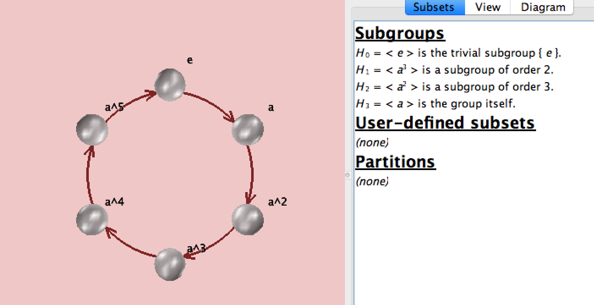
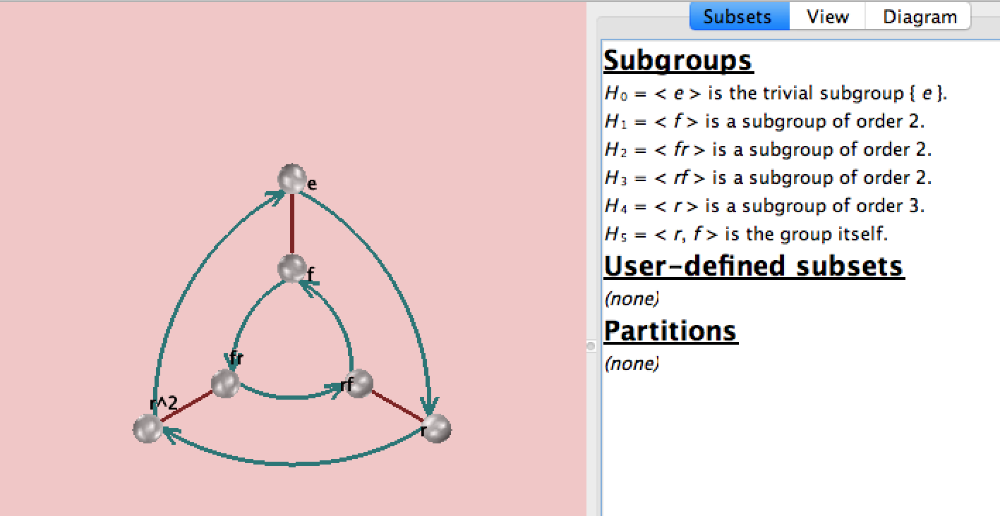
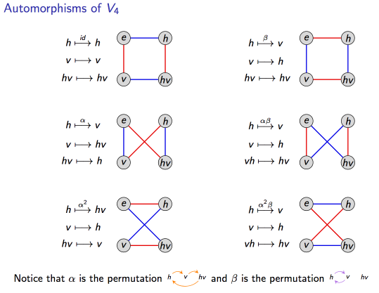
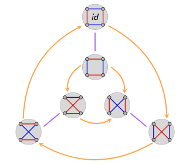
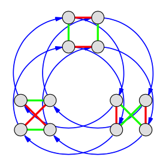

Example 1: C₃⋊C₂ = S₃
You can't do the complicated stuff with being clear on the simple stuff. So to clarify semi-direct products lets start with pretty much the simplest case.
C₃×C₂ = C₆ is a direct product. Thus, C₃ and C₂ are normal subgroups of the cyclic group C₆ which has order 6.
C₃⋊C₂ = S₃ is a semi-direct product. Only C₃ is a subgroup of the symmetric group S₃ which also has order 6.
C₆ and S₃ are the only 2 groups of order 6.
C₃ has 2 automorphisms, the identity automorphism: {e ↦ e, y ↦ y, y² ↦ y²} and a bijective one: {e ↦ e, y ↦y², y² ↦ y}
The identity automorphism is used in the first, direct product, case to build C₆.
The bijective automorphism of C₃ is used to build S₃. The second Cayley diagram below for S₃ shows how C₂ is used to map the identity automorphism to the bijective one via a semi-direct product. The inner circle goes in the reverse direction of the outer circle.
Here is the Cayley diagram for C₆ from the great free program Group Explorer:

Figure 1
And for S₃:

Figure 2
Generators for S₃ are r³= f²= 1. And fr=r²f.
S₃ is isomorphic to the dihedral group of same order, sometimes called D₃, sometimes called D₆.
So that's the simple case. Let's move up to the a larger example: A₄.
Example 2: (C₂×C₂)⋊C₃ = A₄
(C₂×C₂) is the Klein 4 group, aka V₄. V₄ is normal in A₄, so the semi-direct product of v₄⋊C₃ will involve an automorphism of V₄ by C₃.
The automorphism group of V₄ is isomorphic to S₃:

Figure 3
This arrangement shows the isomorphism to S₃ clearly:

Figure 4
So we're looking for an intuition of the semi-direct product, V₄⋊C₃ = A₄. S₃ has C₃ as a subgroup (as we saw in the first part of this post), so there are two homomorphisms from C₃ to S₃, those would be the outer ring and the inner ring in Figure 4, or the left and right columns respectively in Figure 3. Choosing the injective one (the inner ring) gives us A₄ which might be portrayed something like this:

Figure 5
The point of Figure 4 is to provide an intuition showing that A₄ is the semi-direct product of C₃ and the injective automorphism of V₄. I don't find the wiring diagrams of the V₄ automorphisms in Figure 3 very intuitive, but Figures 4 demonstrates that there are 2 possibilities when choosing the automorphisms, one choice (the outer ring in Figure 4) leads to a direct product, the other choice leads to the semi-direct product A₄ as shown in Figure 5.
References:
[1] Algebra: Chapter 0, Part 0. By Paolo Aluffi. Page 232.
[2] http://www.weddslist.com/groups/building/sdp.html
[3] Visual Group Theory by Nathan Carter
[4] Slides by Matthew Macauley, Clemson University. Notes for Math 4120. http://www.math.clemson.edu/~macaule/classes/m17_math4120/index.html
 Intuitions for SU(2) and SO(3)
Intuitions for SU(2) and SO(3)